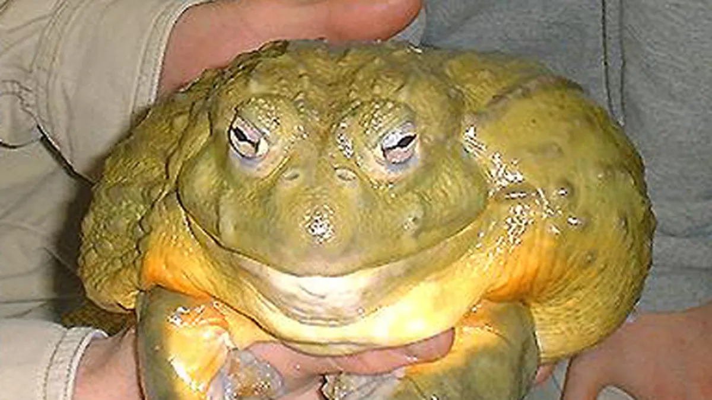

Toads are a group of amphibians belonging to the order Anura, which also includes frogs. Although the term “toad” is not a strict scientific classification, it is commonly used to describe species with dry, rough skin and a more terrestrial lifestyle. They are typically characterized by stout bodies, shorter hind legs, and prominent parotoid glands behind the eyes, which secrete toxins as a defense mechanism. Despite common myths, most toads are harmless to humans when left undisturbed. Toads inhabit forests, grasslands, deserts, agricultural regions, and urban gardens. While they live primarily on land, they rely on water to reproduce, laying eggs in long gelatinous strings that hatch into aquatic tadpoles. Their life cycle involves metamorphosis, transitioning from gill-breathing tadpoles to air-breathing adults. This sensitivity to both aquatic and terrestrial environments makes toads vulnerable to pollution and habitat loss. Primarily nocturnal, toads feed on insects and other invertebrates, playing a crucial role in controlling pest populations. Males produce distinctive calls during breeding seasons, using vocal sacs to amplify sound. Throughout history, toads have appeared in folklore and mythology, symbolizing transformation, protection, poison, or magic. Today, conservation efforts aim to protect declining populations affected by environmental change and disease.
Most toads are nocturnal insectivores. Breeding occurs in freshwater environments, where eggs develop into tadpoles before completing metamorphosis.
Toads possess specialized skin glands that secrete defensive toxins. Their coloration and posture often provide camouflage against predators.
Toads have long been misunderstood, but they are beneficial to ecosystems due to their role in controlling insect populations.
Photographic documentation and field observations contribute to the study of toad populations worldwide.
